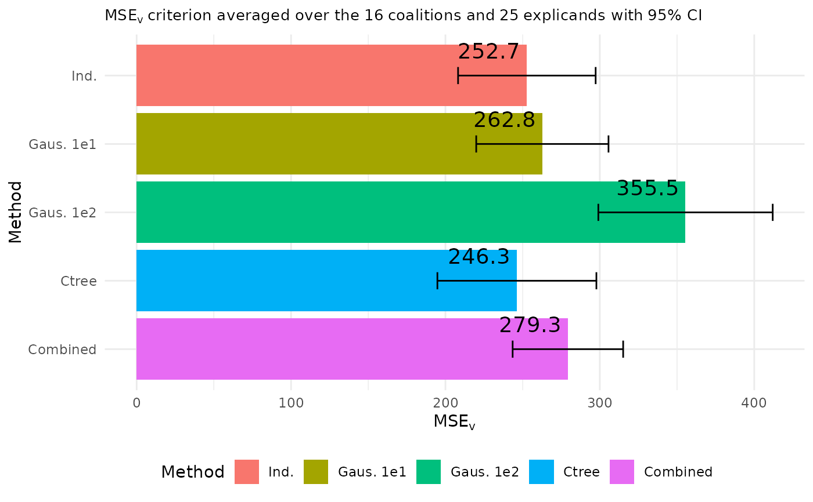

Make plots to visualize and compare the MSEv evaluation criterion for a list of
explain() objects applied to the same data and model. The function creates
bar plots and line plots with points to illustrate the overall MSEv evaluation
criterion, but also for each observation/explicand and coalition by only averaging over
the coalitions and observations/explicands, respectively.
Usage
plot_MSEv_eval_crit(
explanation_list,
index_x_explain = NULL,
id_coalition = NULL,
CI_level = if (length(explanation_list[[1]]$pred_explain) < 20) NULL else 0.95,
geom_col_width = 0.9,
plot_type = "overall"
)Arguments
- explanation_list
A list of
explain()objects applied to the same data and model. If the entries in the list are named, then the function use these names. Otherwise, they default to the approach names (with integer suffix for duplicates) for the explanation objects inexplanation_list.- index_x_explain
Integer vector. Which of the test observations to plot. For example, if you have explained 10 observations using
explain(), you can generate a plot for the first five observations by settingindex_x_explain = 1:5.- id_coalition
Integer vector. Which of the coalitions to plot. E.g. if you used
n_coalitions = 16inexplain(), you can generate a plot for the first 5 coalitions and the 10th by settingid_coalition = c(1:5, 10).- CI_level
Positive numeric between zero and one. Default is
0.95if the number of observations to explain is larger than 20, otherwiseCI_level = NULL, which removes the confidence intervals. The level of the approximate confidence intervals for the overall MSEv and the MSEv_coalition. The confidence intervals are based on that the MSEv scores are means over the observations/explicands, and that means are approximation normal. Since the standard deviations are estimated, we use the quantile t from the T distribution with N_explicands - 1 degrees of freedom corresponding to the provided level. Here, N_explicands is the number of observations/explicands. MSEv +/- tSD(MSEv)/sqrt(N_explicands). Note that theexplain()function already scales the standard deviation by sqrt(N_explicands), thus, the CI are MSEv \/- tMSEv_sd, where the values MSEv and MSEv_sd are extracted from the MSEv data.tables in the objects in theexplanation_list.- geom_col_width
Numeric. Bar width. By default, set to 90% of the
ggplot2::resolution()of the data.- plot_type
Character vector. The possible options are "overall" (default), "comb", and "explicand". If
plot_type = "overall", then the plot (one bar plot) associated with the overall MSEv evaluation criterion for each method is created, i.e., when averaging over both the coalitions and observations/explicands. Ifplot_type = "comb", then the plots (one line plot and one bar plot) associated with the MSEv evaluation criterion for each coalition are created, i.e., when we only average over the observations/explicands. Ifplot_type = "explicand", then the plots (one line plot and one bar plot) associated with the MSEv evaluation criterion for each observations/explicands are created, i.e., when we only average over the coalitions. Ifplot_typeis a vector of one or several of "overall", "comb", and "explicand", then the associated plots are created.
Value
Either a single ggplot2::ggplot() object of the MSEv criterion when plot_type = "overall", or a list
of ggplot2::ggplot() objects based on the plot_type parameter.
Examples
# \donttest{
if (requireNamespace("xgboost", quietly = TRUE) && requireNamespace("ggplot2", quietly = TRUE)) {
# Get the data
data("airquality")
data <- data.table::as.data.table(airquality)
data <- data[complete.cases(data), ]
#' Define the features and the response
x_var <- c("Solar.R", "Wind", "Temp", "Month")
y_var <- "Ozone"
# Split data into test and training data set
ind_x_explain <- 1:25
x_train <- data[-ind_x_explain, ..x_var]
y_train <- data[-ind_x_explain, get(y_var)]
x_explain <- data[ind_x_explain, ..x_var]
# Fitting a basic xgboost model to the training data
model <- xgboost::xgboost(
data = as.matrix(x_train),
label = y_train,
nround = 20,
verbose = FALSE
)
# Specifying the phi_0, i.e. the expected prediction without any features
phi0 <- mean(y_train)
# Independence approach
explanation_independence <- explain(
model = model,
x_explain = x_explain,
x_train = x_train,
approach = "independence",
phi0 = phi0,
n_MC_samples = 1e2
)
# Gaussian 1e1 approach
explanation_gaussian_1e1 <- explain(
model = model,
x_explain = x_explain,
x_train = x_train,
approach = "gaussian",
phi0 = phi0,
n_MC_samples = 1e1
)
# Gaussian 1e2 approach
explanation_gaussian_1e2 <- explain(
model = model,
x_explain = x_explain,
x_train = x_train,
approach = "gaussian",
phi0 = phi0,
n_MC_samples = 1e2
)
# ctree approach
explanation_ctree <- explain(
model = model,
x_explain = x_explain,
x_train = x_train,
approach = "ctree",
phi0 = phi0,
n_MC_samples = 1e2
)
# Combined approach
explanation_combined <- explain(
model = model,
x_explain = x_explain,
x_train = x_train,
approach = c("gaussian", "independence", "ctree"),
phi0 = phi0,
n_MC_samples = 1e2
)
# Create a list of explanations with names
explanation_list_named <- list(
"Ind." = explanation_independence,
"Gaus. 1e1" = explanation_gaussian_1e1,
"Gaus. 1e2" = explanation_gaussian_1e2,
"Ctree" = explanation_ctree,
"Combined" = explanation_combined
)
# Create the default MSEv plot where we average over both the coalitions and observations
# with approximate 95% confidence intervals
plot_MSEv_eval_crit(explanation_list_named, CI_level = 0.95, plot_type = "overall")
# Can also create plots of the MSEv criterion averaged only over the coalitions or observations.
MSEv_figures <- plot_MSEv_eval_crit(explanation_list_named,
CI_level = 0.95,
plot_type = c("overall", "comb", "explicand")
)
MSEv_figures$MSEv_bar
MSEv_figures$MSEv_coalition_bar
MSEv_figures$MSEv_explicand_bar
# When there are many coalitions or observations, then it can be easier to look at line plots
MSEv_figures$MSEv_coalition_line_point
MSEv_figures$MSEv_explicand_line_point
# We can specify which observations or coalitions to plot
plot_MSEv_eval_crit(explanation_list_named,
plot_type = "explicand",
index_x_explain = c(1, 3:4, 6),
CI_level = 0.95
)$MSEv_explicand_bar
plot_MSEv_eval_crit(explanation_list_named,
plot_type = "comb",
id_coalition = c(3, 4, 9, 13:15),
CI_level = 0.95
)$MSEv_coalition_bar
# We can alter the figures if other palette schemes or design is wanted
bar_text_n_decimals <- 1
MSEv_figures$MSEv_bar +
ggplot2::scale_x_discrete(limits = rev(levels(MSEv_figures$MSEv_bar$data$Method))) +
ggplot2::coord_flip() +
ggplot2::scale_fill_discrete() + #' Default ggplot2 palette
ggplot2::theme_minimal() + #' This must be set before the other theme call
ggplot2::theme(
plot.title = ggplot2::element_text(size = 10),
legend.position = "bottom"
) +
ggplot2::guides(fill = ggplot2::guide_legend(nrow = 1, ncol = 6)) +
ggplot2::geom_text(
ggplot2::aes(label = sprintf(
paste("%.", sprintf("%d", bar_text_n_decimals), "f", sep = ""),
round(MSEv, bar_text_n_decimals)
)),
vjust = -1.1, # This value must be altered based on the plot dimension
hjust = 1.1, # This value must be altered based on the plot dimension
color = "black",
position = ggplot2::position_dodge(0.9),
size = 5
)
}
#>
#> ── Starting `shapr::explain()` at 2025-08-25 20:54:10 ──────────────────────────
#> ℹ Feature classes extracted from the model contain `NA`.
#> Assuming feature classes from the data are correct.
#> ℹ `max_n_coalitions` is `NULL` or larger than `2^n_features = 16`, and is
#> therefore set to `2^n_features = 16`.
#>
#> ── Explanation overview ──
#>
#> • Model class: <xgb.Booster>
#> • v(S) estimation class: Monte Carlo integration
#> • Approach: independence
#> • Procedure: Non-iterative
#> • Number of Monte Carlo integration samples: 100
#> • Number of feature-wise Shapley values: 4
#> • Number of observations to explain: 25
#> • Computations (temporary) saved at: /tmp/RtmpHOvW0M/shapr_obj_1f781de62e76.rds
#>
#> ── Main computation started ──
#>
#> ℹ Using 16 of 16 coalitions.
#>
#> ── Starting `shapr::explain()` at 2025-08-25 20:54:11 ──────────────────────────
#> ℹ Feature classes extracted from the model contain `NA`.
#> Assuming feature classes from the data are correct.
#> ℹ `max_n_coalitions` is `NULL` or larger than `2^n_features = 16`, and is
#> therefore set to `2^n_features = 16`.
#>
#> ── Explanation overview ──
#>
#> • Model class: <xgb.Booster>
#> • v(S) estimation class: Monte Carlo integration
#> • Approach: gaussian
#> • Procedure: Non-iterative
#> • Number of Monte Carlo integration samples: 10
#> • Number of feature-wise Shapley values: 4
#> • Number of observations to explain: 25
#> • Computations (temporary) saved at: /tmp/RtmpHOvW0M/shapr_obj_1f7838d452cc.rds
#>
#> ── Main computation started ──
#>
#> ℹ Using 16 of 16 coalitions.
#>
#> ── Starting `shapr::explain()` at 2025-08-25 20:54:11 ──────────────────────────
#> ℹ Feature classes extracted from the model contain `NA`.
#> Assuming feature classes from the data are correct.
#> ℹ `max_n_coalitions` is `NULL` or larger than `2^n_features = 16`, and is
#> therefore set to `2^n_features = 16`.
#>
#> ── Explanation overview ──
#>
#> • Model class: <xgb.Booster>
#> • v(S) estimation class: Monte Carlo integration
#> • Approach: gaussian
#> • Procedure: Non-iterative
#> • Number of Monte Carlo integration samples: 100
#> • Number of feature-wise Shapley values: 4
#> • Number of observations to explain: 25
#> • Computations (temporary) saved at: /tmp/RtmpHOvW0M/shapr_obj_1f7862a97dc4.rds
#>
#> ── Main computation started ──
#>
#> ℹ Using 16 of 16 coalitions.
#>
#> ── Starting `shapr::explain()` at 2025-08-25 20:54:11 ──────────────────────────
#> ℹ Feature classes extracted from the model contain `NA`.
#> Assuming feature classes from the data are correct.
#> ℹ `max_n_coalitions` is `NULL` or larger than `2^n_features = 16`, and is
#> therefore set to `2^n_features = 16`.
#>
#> ── Explanation overview ──
#>
#> • Model class: <xgb.Booster>
#> • v(S) estimation class: Monte Carlo integration
#> • Approach: ctree
#> • Procedure: Non-iterative
#> • Number of Monte Carlo integration samples: 100
#> • Number of feature-wise Shapley values: 4
#> • Number of observations to explain: 25
#> • Computations (temporary) saved at: /tmp/RtmpHOvW0M/shapr_obj_1f7848774c32.rds
#>
#> ── Main computation started ──
#>
#> ℹ Using 16 of 16 coalitions.
#>
#> ── Starting `shapr::explain()` at 2025-08-25 20:54:13 ──────────────────────────
#> ℹ Feature classes extracted from the model contain `NA`.
#> Assuming feature classes from the data are correct.
#> ℹ `max_n_coalitions` is `NULL` or larger than `2^n_features = 16`, and is
#> therefore set to `2^n_features = 16`.
#>
#> ── Explanation overview ──
#>
#> • Model class: <xgb.Booster>
#> • v(S) estimation class: Monte Carlo integration
#> • Approach: gaussian, independence, and ctree
#> • Procedure: Non-iterative
#> • Number of Monte Carlo integration samples: 100
#> • Number of feature-wise Shapley values: 4
#> • Number of observations to explain: 25
#> • Computations (temporary) saved at: /tmp/RtmpHOvW0M/shapr_obj_1f78441d498e.rds
#>
#> ── Main computation started ──
#>
#> ℹ Using 16 of 16 coalitions.

# }